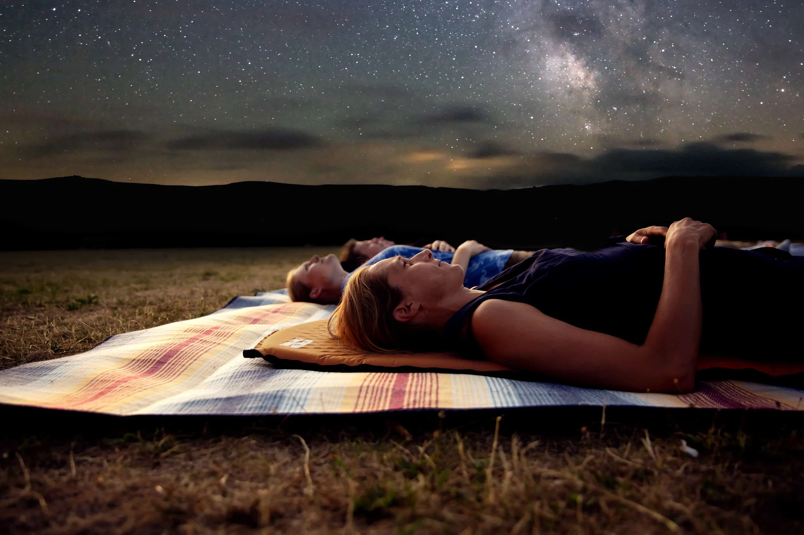

Resources
Here are some useful brief information about stargazing, click on the links to get information:
Choose a dark location – Avoid city lights to see stars more clearly.
Check the weather – Clear skies are best; clouds block your view.
Pick the right time – Late evening or early night often has the best visibility.
Know your sky – Use apps, maps, or star charts to identify constellations and planets.
Be patient – Give your eyes time to adjust to the dark for better stargazing.
Use this Link for more details:
Stargazing Top Tips - Sky at Night Magazine
Types of Stars
Red Dwarfs – Small, cool stars, very common in the galaxy.
Yellow Stars – Like the Sun; medium size and temperature.
Blue Giants – Very hot, massive, and short-lived stars.
Neutron Stars – Extremely dense stars left after a supernova.
Use this Link for more details:
NASA – Types of Stars

Observing Tools & Apps
Apps: Stellarium, SkySafari, Star Walk.
Equipment: Binoculars, telescopes, red-light flashlight, star charts.
Tips: Start with the naked eye; then gradually use tools.
Use this Link for more details:
Tools & Apps.